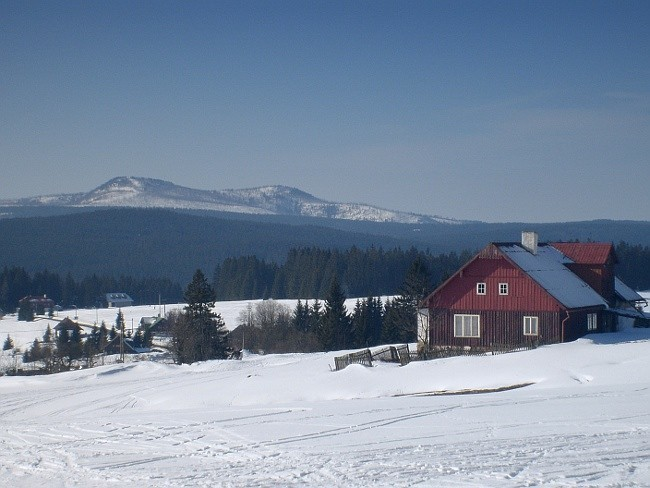

Protože se mi skoro po týdnu nervy dostatečně zklidnily z přechodu z přírody do školy, což je šok opravdu veliký, rozhodl jsem se neodkládat dál napsání tohoto článku. A tak sem píšu mé vzpomínky na letošní lyžák.
Ten týden hrozně rychle utekl a nějak jsem si vůbec nestihl zapamatovat některé trasy a mám to v hlavě trochu pomotané, takže kdyby tento článek četl někdo s lepší pamětí než já, ať se nebojí napsat pořádně kritický komentář, ve kterém mě zprdne, že takhle to přece vůbec nebylo. Píšu tak jak vzpomínám a občas něco trochu přibarvím.
Vůbec celý tenhle lyžák byl hodně na rychlo. Nevím, čím to bylo, asi tím že prázdniny byly letos dost brzy. Prostě jsem ještě týden před odjezdovou sobotou neměl boty na běžky a spacák. Naštěstí Hájkovi měli boty správné velikosti, mně padnoucí a tak jsem měl první starost odbytou. Sehnat spacák nebylo vlastně ani tak těžké, ba dokonce to nebylo ani potřeba, protože jsem z informací od Jendy věděl, že jsou na chatě erární spacáky. Ale spát v erárním spacáku se mi nechtělo, kdo ví, kdo v něm spal přede mnou a tak jsem si spacák půjčil.

V pátek večer jsem si zabalil a přichystal se na zítřejší odjezd. Jel jsem jako obyčejně s Johanou. Den začal poměrně jako obyčejně. Vstal jsem v šest hodin, nasnídal se a vytáhl běžky ze sklepa. Pak jsem naposledy před odjezdem zapnul počítač. V tu chvíli se mi vůbec nikam jet nechtělo, raději bych sedět celý týden u počítače a nudil se, ale bylo dobře, že už nešlo couvnout.
A tak jsem nahodil batoh na záda, maminka mi udělala křížek, jak se zpívá v písničce Českýho chleba, a vylezl jsem před panelák. Bylo asi za dvě minuty sedm, přijet pro mě měli přesně v sedm. A tak jsem čekal. Čekám pět minut - nikdo nikde. Čekám dalších pět minut, máti vykoukne z balkónu jestli už jsem odjel a když vidí že ne, volá Hájkům, kde jsou.
Ti už byli na cestě, tradičně se zpožděním, letos vlastně úmyslným. Cestou jsme měli vyzvednout ještě Kryštofa ve Velharticích, ale byl trochu marod a tak se rozhodl přijet na lyžák až o pár dní později. Proto bylo zbytečné jet tak brzy, ale mně se to jaksi nestihlo říct a tak jsem tam venku čekal čtvrt hodinky v zimě. No co, já jsem zvyklý (a jestli ne, tak si alespoň zvyknu, budu to potřebovat).

Pak konečně přijeli, já si dal lyže a batoh do auta, přičemž Johana poznamenala, že ho mám každý rok menší a jelo se.
Vyjeli jsme tedy směrem na Železnou Rudu, měli jsme tam mezi-zastávku, nabírali jsme Kláru. I nadále cesta pokračovala v klidu a my mohli vzpomínat na to, co už jsme všechno s touhle partou zažili. Bylo toho dost, a tak jsme se mohli zabavit až do chvíle, kdy jsme dojeli na Horskou Kvildu. Byli jsme tu výjimečně včas, do srazu v devět zbývaly ještě dvě minuty. Měli jsme se sejít před chatou pana Musila, ale teď která to je? Tipoval jsem to na tu chatu, ve které jsme také jednou na lyžáku byli. A tak jsme zastavili na parkovišťátku před ní.
Proti nám stálo auto s českobudějovickou značkou. V ní seděli dva lidé a tak si nás lehce prohlíželi, my je samozřejmě také. Minuta po deváté, nikde nikdo.
"A je tohle opravdu chata pana Musila?", ptá se Zdeněk.
My mlčíme, protože si tím nejsme jistí. A tak se rozhodne, že projedeme Horskou Kvildu až na konec a budeme se dívat po Jendovo autu. Projedeme až na konec, ale auto nikde. Jsme trochu bezradní a tak dáme na chytrou radu: "Za zeptání nic nedáš a huba ti neupadne".
Vedle auta právě prochází starší pán, Zdeněk říká, že ten to tu určitě bude znát, stahuje okénko a ptá se na chatu pana Musila. Chyba lávky, pán to tu podobně jako my moc nezná. Ale poradí nám, že se máme zeptat v hájovně, která je o pár metrů dále.
Popojedeme a Zdeněk se jde zeptat. Vrátí se lehce zmaten, protože narazil na dívku ve věku Johany a poznamenává, že její popis byl lehce pubertálně zmaten a že teda jako nic neví.
Nevadí, vracíme se zpátky a znovu se pozorně díváme po autech. Opět nic a tak znovu zaparkujeme na stejném místě jako před tím. Proti nám pořád sedí dva lidé v autě.
"Hale, vždyť to je Lenka", vykřikne Johana.
A skutečně, proti nám sedí dva dobře známí lidé, Vašek s Lenkou. Do teď nechápu jak jsme je předtím nemohli poznat. Stane se…
Za chvíli se věci začnou dávat do pohybu. Po silnici k nám přijíždí auto, které na tu stranu před chvílí jelo a ouha, zase patří k nám. Za chvíli jsou tu už všichni i Jenda s Michalem a my můžeme vyrazit na cestu ke Zlaté studně, je to blízko, asi tři kilometry.
A tak jsme se dostali až na chatu. Musím poznamenat, že mě hodně nepříjemně překvapila. Honza sice říkal, že je to na nás až moc luxusní, ale takhle moc jsem to přece jen nečekal. Byla to téměř chalupa, pořádný starý barák.
Zatímco ji Jenda a Michal prozkoumávali, my se vydali k potoku, který tekl asi půl kilometru dolů ze stráně. Měli jsme v něm slíbené ranní koupele, z čehož jsme všichni trnuli hrůzou. Od potoka jsme se raději vrátili zpátky do chaty, kde jsme se rozházeli do pokojů a ubytovali. Ne úplně doslova, jak správně řekl Pavel: "Budeme tu jen týden, tak proč si vybalovat".
Večerní vycházka byla na Zhůří. Krásný západ slunce, škoda že nemám fotky. Když jsme se dost pokochali a také nám začala být zima, jeli jsme zpátky na Horskou Kvildu, odkud jsme ráno vyjeli. Vůbec se nám tam popravdě nechtělo, ale museli jsme vrátit boby, na kterých jsme táhli na chatu proviant.
Cesta byla dobrá, z kopečka, někde až příliš, sněhu moc nebylo, pády byly tvrdé. Z Horské Kvildy zase na Zlatou studnu a hurá do chaty na večeři. Zde je první temná díra v mé paměti, co bylo k večeři si nemůžu vybavit.

Další temná díra v mé paměti je celý další den. První den mám ještě docela jasný, ale co bylo druhý? To si nějak nevzpomínám. Počkejte, možná se rozednívá. Nejspíš jsem měl službu. Doufám, že se nepletu, a že to bylo opravdu v neděli. Službu v kuchyni jsme měli vždy na den po dvojici. Já měl tu smůlu, že ke mě Jenda přiřadil zrovna Johanu. Té se totiž udělalo už v sobotu večer špatně a já tak měl službu sám, protože Johana se dostávala z nemoci.
Nebylo to vlastně úplně nejhorší. Všichni se nade mnou jaksi slitovali a já tak měl málo práce. Vlastně jsem jenom topil. Dopoledne jsme měli takové polní shromáždění, z toho si taky moc nepamatuji. S mou pamětí je to asi hodně špatné. Další dny si vybavuji jen hodně mlhavě a tak napíšu jen to co bylo nejzajímavější a v paměti mi to uvízlo.
První taková událost je následujícího dne. Den jako každý jiný. Až do večeře. Službu měla Markéta s Aničkou, ale ty za to, co se stalo vlastně nemohly. Překvapivě za to mohl Jenda. K večeři měla být pochoutka, spousta pudingu. Vše probíhalo dobře, dokud ho nechtěli osladit. Jenda si vzpomněl, že v jídelně na stole nějaký zbytek cukru, a tak aby nemusel načínat nový, pytlík ležící na stole do pudingu vysypal. To neměl dělat.
Na pytlíku byl totiž nápis "Sůl", ale to Jenda nějak přehlédl a proto bylo v pudingu půl kila soli. Nedokážete si představit, co je to za humus. Ještě že jsme všichni otrlí. Byli jsme taky hodně unavení, večeře měla být odměnou za uraženou vzdálenost. Ten den jsme na běžkách uběhli našich rekordních 41 kilometrů.
V úterý jsme měli kratší výlet, protože jsme byli po včerejšku hodně unavení. Vyjeli jsme krásnou vycházkovou rychlostí na Přilbu a odtud okruhem zase zpátky do chaty. Odpoledne se hrál fotbal. No fotbal, spíš ragby, všichni jsme z toho byli dost pomlácení. Hrát fotbal na sněhu, ve kterém se nedá pořádně běhat s malým gumovým míčkem je dost záhul. A co bylo horší, hrálo se o službu.
Resp. tým který prohrál, si mezi sebou střihal a kdo zůstal nakonec měl ve čtvrtek službu. I přes velkou snahu a celkové převaze nad soupeřem nás shodou okolností jsme nakonec prohráli 6:10.
Ve středu jsme si měli připravit program pro malé děti, které byli na již zmiňované chatě pana Musila. Když jsme tam přišli, zírali na nás, jako kdybychom snad ani nebyli lidé. To jsme po těch pár dnech v přírodě vypadali tak strašně? Cítili jsme se asi, tak jako zvířata v zoologické. Ale na co jsme se všichni těšili, byla pořádná večeře. A ta taky byla. Jiřinka nás nezklamala a její guláš, či co to bylo, byl vynikající.
Nový hit lyžáku byl poker. Poker se naučili skoro všichni a tak když šli malí spát, my ještě chvíli seděli v jídelně a hráli poker o sirky. Bohužel jsme nedohráli, čekala nás ještě cesta zpět do chaty. Ještě předtím než jsme se odtamtud odebrali nastalo kámennůžkopapírování o čtvrteční službu. A tak jsem jaksi chytil službu ještě na jeden den. Pak jsme se po tmě vydali zpátky na chatu.

Ve čtvrtek mi začal opět den o hodinu dřív. Tenhle den si pamatuji docela přesně a tak vás budu chvíli nudit dlouhými detaily. K snídani jsme měli chleba se sýrem nebo s nugetou, k pití jako obyčejně čaj. Po snídani jsme se vydali zase známou trasou k Horské Kvildě. Tam jsme nasedli do Michalova auta a jeli na Modravu. Trasa byla naplánována k Poledníku. Na Poledník jsme skutečně dojeli a přálo nám i počasí, výhled dobrý, byl vidět i Velký Javor. Potom zase zpátky, jako obvykle oklikou zpět.
Jednu událost si pamatuji docela přesně. Stala se totiž docela nečekaná věc, vedoucí si z nás vystřelili. Na jednom rozcestí se hodně dlouho rozmýšleli kam jet, jestli do kopce nebo z kopce. My si samozřejmě přáli jet z kopce, ale když se vedoucí jednou rozhodnou tak s nimi nikdo nehne. Ale překvapivě se jelo z kopce. Dole bylo další rozcestí, kde se opět dlouho čekalo a nakonec vedoucí přišli s nemilou zprávou. Jeli jsme špatně.
Vzali jsme to vážně, nepamatuji případ, kdy by si z nás vedoucí takhle vystřelili. Už jsme chtěli začít stoupat, ale to už se Honza s Michalem zasmáli dost a my mohli pokračovat dál. Samozřejmě jsme byli na správné trase.
Veselý byl poslední sjezd, už ani nevím proč, ale byl dost prudký a nám se jaksi podařilo skoro všem lehnout na zem. A komu se to nepovedlo tam, lehnul si o kus dál.
Celý tábor se konala jedna velká bitva a to vroubkařů proti mazáčům. Bitva, kdy ani jedna strana nebere žádné argumenty, které jí nevyhovují. Samozřejmě, lepší jsou vroubky (co myslíte že mám :), ale zkuste o tom přesvědčit někoho se zarytými představami.
Ani nám nechtěli uvěřit, že i Bauer má vroubky, jen to tají aby nebyl za amatéra. Nevěřili a tak se dál dřeli s pracným mazání, kterému začali odborně říkat strukturované, a pak je z toho boleli ruce, měli puchýře či podobné věci.
V pátek se konala taková speciální hra, jmenovala se lov na jelena a spočívala v tom, že jsme byli rozděleni na dvě družstva, po pěti a po šesti lidech. Každá skupina měla jednoho postřeleného jelena (my Michala) a toho jsme jako nelítostní lovci museli pronásledovat.
Pozor jsme si museli ovšem dát na znepřátelené eskymáky (rozuměj strážce národního parku). Jelena se nám ulovit podařilo a tak jsme to oslavili polívkou v restauraci a pekárně Kvilda. Návštěvu můžu doporučit, mají tam skvělé koblihy.
Pak, plně nasycení a v dobré náladě, jsme se vydali cestou po magistrále do Horské Kvildy. Tam jsme se opět měli spojit s malými a pak závodit v biatlonu. Ještě před rokem, na Jizeře, jsem se při podobném závodu hnal jako blázen, skončil třetí a pak mi bylo celý den na nic, tak jsem letos raději zvolil mírnější tempo.
Večer byl hodně zajímavý, ale tohle téma nechám na jindy, je to na dlouhý povídání.
A ráno se pak už jenom balilo, uklízelo, zametalo, mylo a tak podobně. Pak zase na Horskou Kvildu a domů. Civilizace, voda, topení, elektřina, kdo si myslí že má všechno, nechť ví že nemá skoro nic, protože i bez toho co má, to může být lepší.